A community-focused food sharing app UI/UX design project — connecting donors, recipients, and delivery volunteers to reduce food waste and build stronger communities.
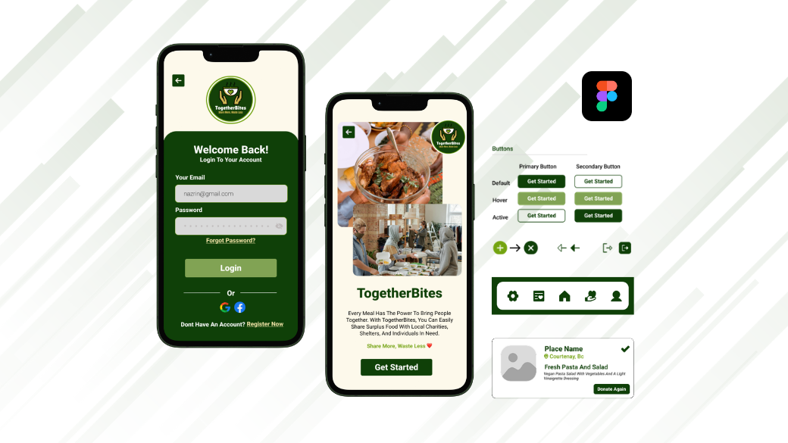
🥗assets/TogetherBites_Coverpage.pngTogetherBites is a community-focused food sharing app designed to connect users who want to donate food, receive donations, and manage deliveries and pickups efficiently. The app bridges the gap between people with surplus food and those in need, making the process of giving and receiving as simple and dignified as possible.
This was a college UI/UX design project completed at North Island College as part of my Digital Design & Development programme. The brief asked students to design a mobile app concept that addressed a real-world social challenge. I chose food waste and food insecurity — two problems deeply connected, yet rarely addressed through a single, accessible platform.
The project showcases the complete end-to-end UI/UX design process: from mood boards and wireframes to a full design system, high-fidelity mockups, and an interactive Figma prototype — all completed within a 3-week sprint.
Before opening Figma, I spent time understanding the landscape of food sharing, food waste apps, and community platforms. I reviewed existing apps like OLIO, Too Good To Go, and local food bank portals — identifying what worked, what was frustrating, and what gaps remained for everyday donors and recipients.
Key questions guiding the research: How do people currently donate food informally? What stops them from doing it more? What makes recipients feel safe and respected? What does a pickup or delivery flow actually look like in practice?
Before designing a single screen, I created a full design system in Figma to ensure every screen felt cohesive and purposeful. A well-built design system speeds up the process and prevents inconsistency as the number of screens grows.
I chose Roboto for its clean, modern, and highly readable characteristics — well suited for a utility app where clarity matters. The type scale uses:
Warm tones, greens, and neutral grays combine to convey community, sustainability, and clarity — reinforcing the app's purpose without feeling clinical or corporate.
I designed a library of consistent, reusable components — navigation bars, donation cards, action buttons, input forms, status badges, and icons — so every screen feels part of the same system and future screens can be built quickly.
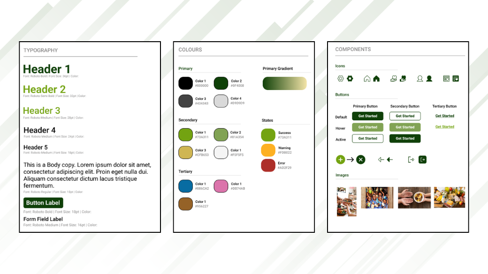
Before wireframing, I mapped out the core user flows for each of the three roles — donor, recipient, and volunteer. Understanding these journeys helped me ensure the navigation structure was logical and that no critical step was buried or missing.
I created low-fidelity wireframes to plan the app's layout and user flows before committing to any visual design decisions. Working in grayscale and simple shapes allowed me to focus entirely on navigation, hierarchy, and interaction patterns — making it easier to spot and fix problems early.
Wireframing covered all key screens: onboarding, signup/login, location selection, the dashboard, donate and receive flows, donation history, and the delivery/pickup confirmation screens. Each wireframe went through at least one round of critique and revision before moving to high fidelity.
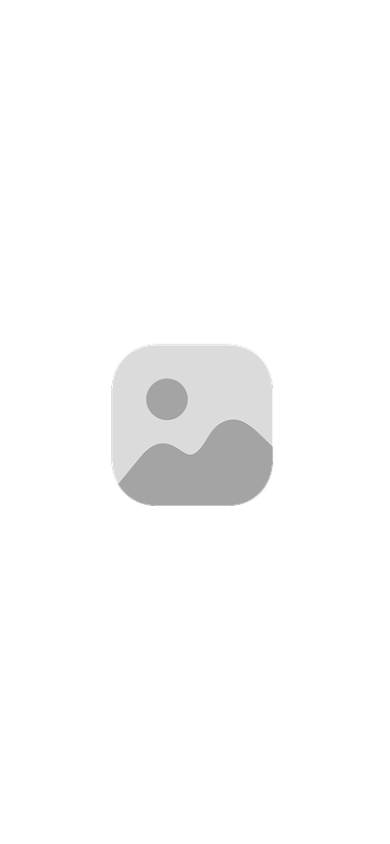
📐Start Screen 1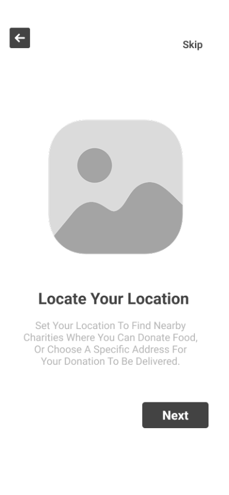
📐Start Screen 2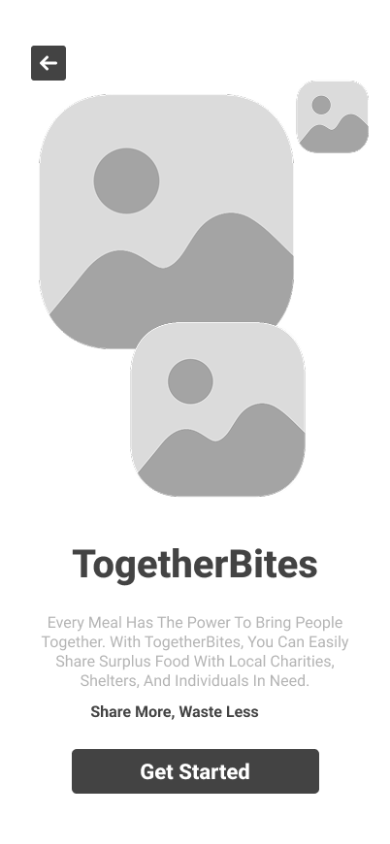
📐Splash Screen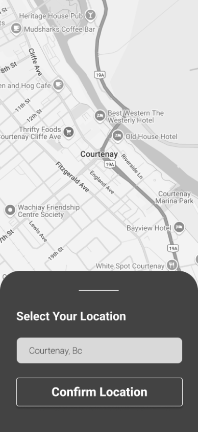
📐Confirm Location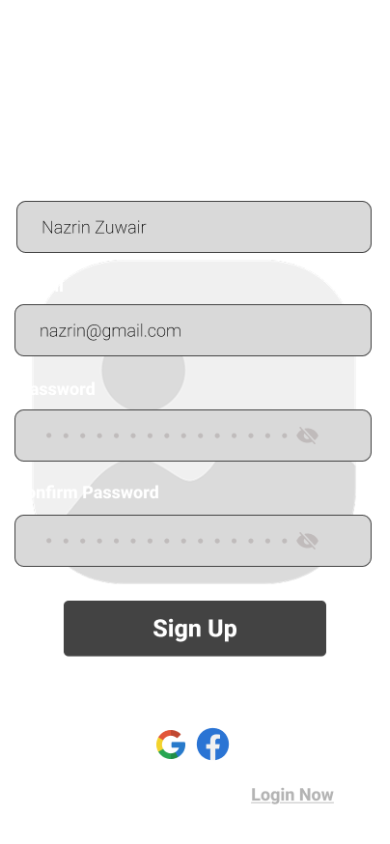
📐Sign Up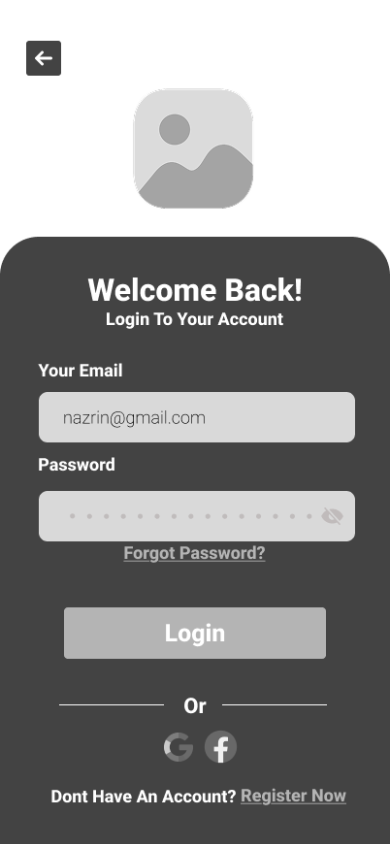
📐Login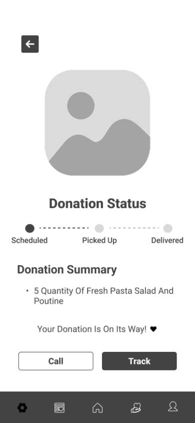
📐Donation Confirmed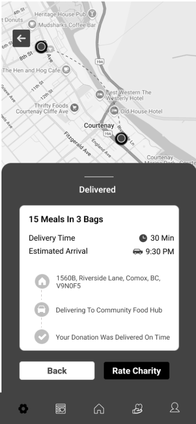
📐Delivery ConfirmWith wireframes validated, I moved into high-fidelity design — applying the design system, typography, colour palette, and reusable components to every screen. I designed 20 high-fidelity mockups in total, focusing on making every interaction feel intuitive and every screen visually polished.
Particular attention was given to micro-interactions: button states, confirmation screens that celebrate the user's contribution, and status indicators for the pickup and delivery flow that give users real confidence their food is on its way.
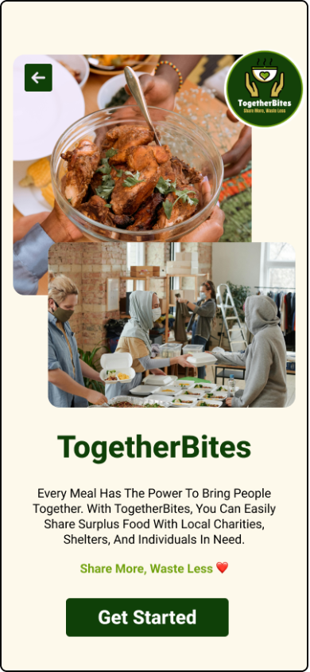
✅Splash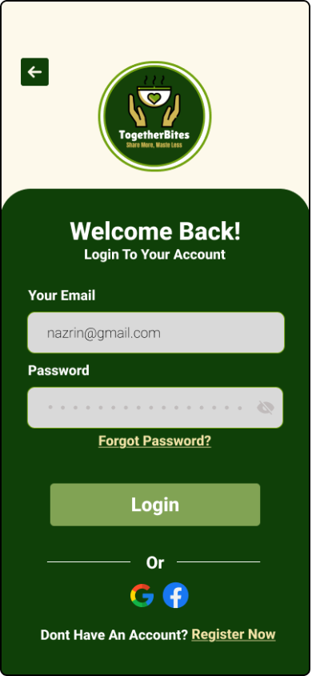
✅Login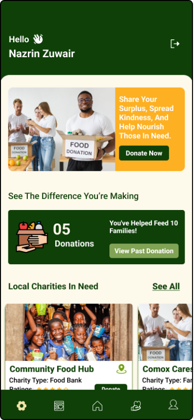
✅Dashboard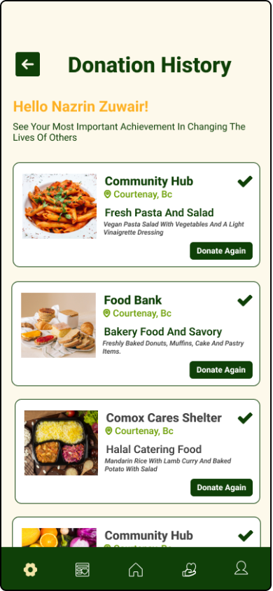
✅Donation History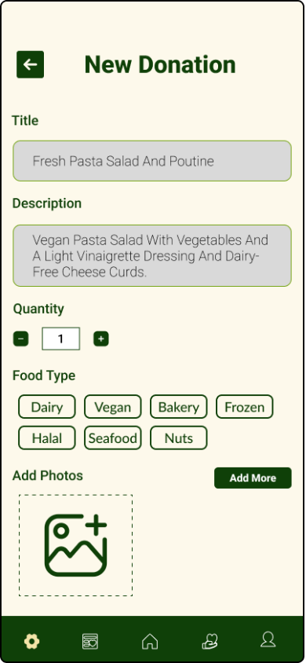
✅Donate Food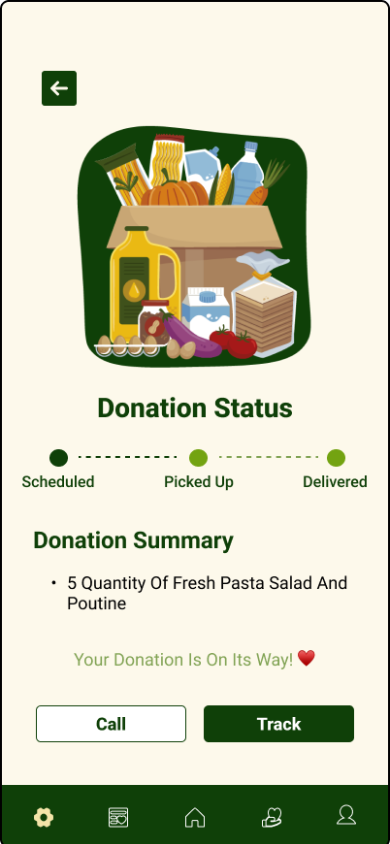
✅Confirmed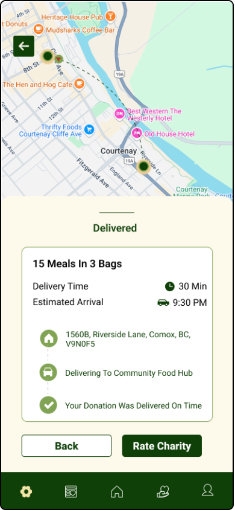
✅Delivery Confirm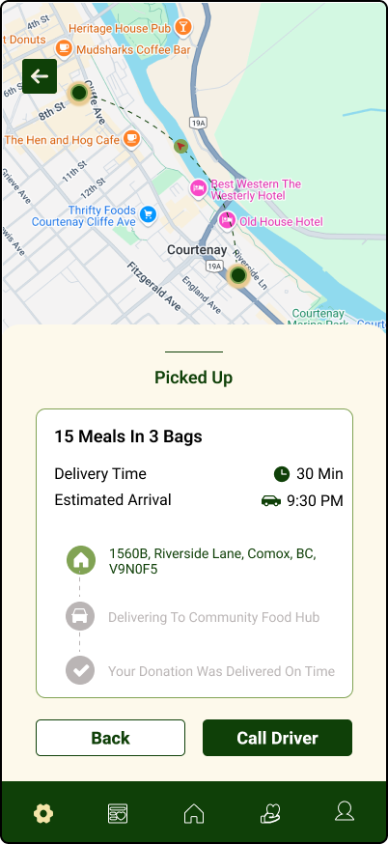
✅Track PickupThe interactive Figma prototype covers the complete user journey — from splash screen through onboarding, food donation, and pickup tracking. Click through the screens below or open the full prototype in Figma.
This was a pure UI/UX design project — no development or coding was involved. Figma was used for every stage: mood boarding, wireframing, building the design system, creating high-fidelity mockups, and assembling the interactive prototype.